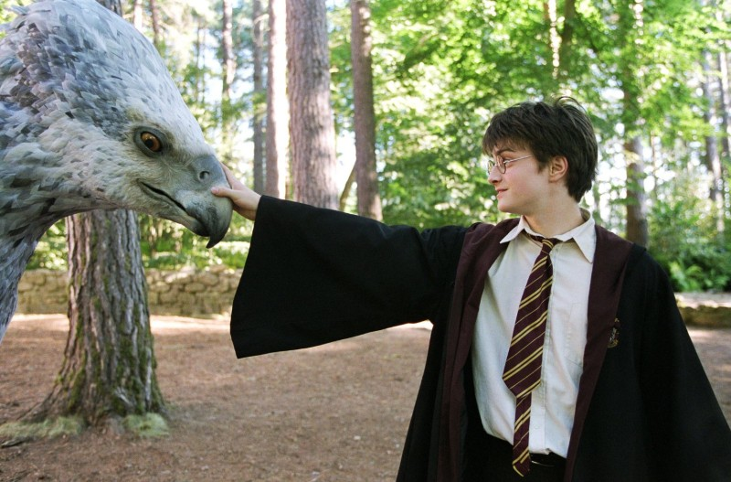

여름방학을 맞이해 버논 더즐리의 여동생, 마지 더즐리가 방문한 가운데 호그와트에서 돌아온 해리는 마지를 부풀어 오르게 한다. 집을 떠나 프리벳가를 걷던 중, 어둠 속에서 검은 개 한 마리를 발견하게 된다. 오갈 데 없는 해리는 갑자기 나타난 구조버스를 타고 다이애건 앨리에 내렸다. 다이애건 골목에 있는 선술집 "리키 콜드런"에서 마법부 장관인 코넬리우스 퍼지를 만나게 된다. 미성년자 마법사로서 해리는 마법 사용이 금지되었기 때문에 퇴학을 각오했지만 퍼지 장관은 새로운 학기가 시작될 때까지 "리키 콜드런"에 숙식하고 외출은 다이애건 앨리와 리키 콜드런에만 머물러 있는 조건에 한해서 해리를 용서해준다.
여름 방학 마지막 날, 해리는 위즐리 일가와 헤르미온느 그레인저를 만난다. 그날 밤 "리키 콜드런"에서 위즐리 부부의 대화를 엿들은 해리는 볼드모트의 부하로, 해리의 부모를 배신하고 두 사람을 죽음으로 내몬 인물이며 아즈카반을 탈옥한 시리우스 블랙이 자신의 목숨을 노리고 있다는 것을 알게 된다. 호그와트로 가는 열차 안에서 갑자기 입맞춤으로 영혼을 빨아들이는 아즈카반의 간수, 디멘터가 침입하였고, 해리는 기절하게 된다. 그러나 새 어둠의 마법 방어술 교수인 루핀이 디멘터들을 물리친다. 학교에 도착한 해리와 론, 그리고 헤르미온느는 디멘터들이 이번 해 동안 호그와트에 배치될 것이라는 사실을 덤블도어에 의해 알게 된다. 그 뒤 루베우스 해그리드의 첫 수업에서 드레이코 말포이가 히포그리프 벅빅을 자극하여 발톱에 베이게 된다. 호그와트에서 해리는 디멘터들 때문에 많은 어려움을 겪게 되고, 심지어는 퀴디치 경기 도중 디멘터와 마주쳐 추락하는 일까지 벌어지고 해리의 빗자루인 님부스 2000이 부서진다. 이에, 해리는 루핀 교수와 패트로누스 마법을 연습하기로 결심한다.